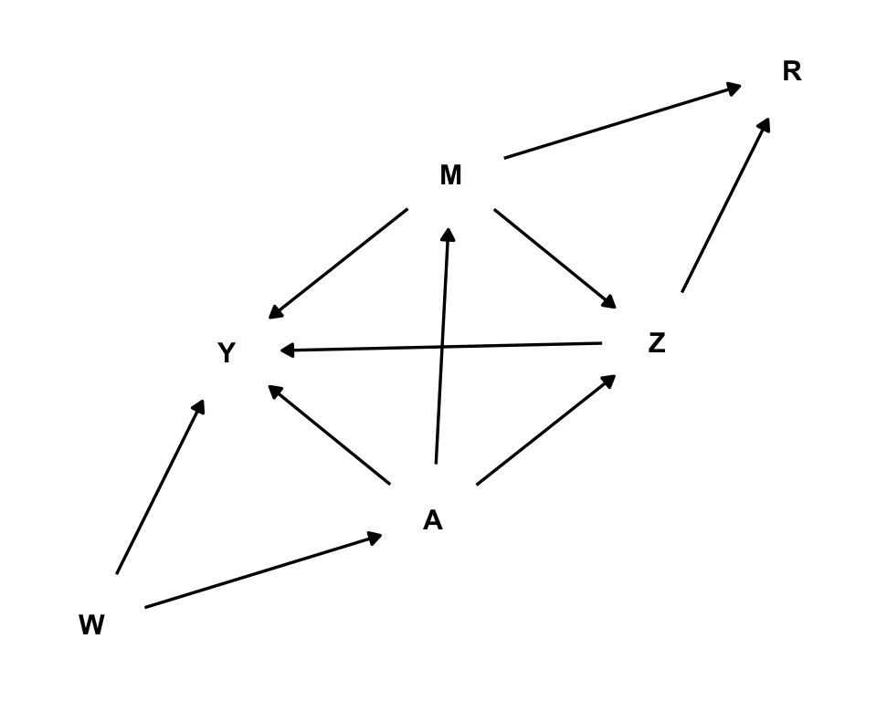

Simulation task: recovering causal effects from post-treatment selection induced by missing outcome data
selection bias
mediation
regression
IPW
doubly-robust
TMLE
A simulation exercise on missing data, selection bias, causal inference and TMLE
Published
October 15, 2023
Objective
The goal is to estimate the average treatment effect (ATE) of a binary treatment on a continuous outcome, from observational data where the outcome is subject to a missingness/selection mechanism.
For this task, we employ:
The structural causal models (SCM) framework (Pearl 2009)
A generated observational dataset
A backdoor admissible set
A missing-outcome mechanism that allows recoverability via IPW and regression adjustment
Generated data from substantive model and missingness mechanism
We build a directed acyclic graph (DAG) \(\mathcal{G}\), involving the exposure \(A\), the outcome \(Y\), a confounder variable \(W\), mediators of the effect \(M,Z\), and missingness mechanism for the outcome \(R\)
Code
# DAG visualizationlibrary(ggplot2)library(dagitty)library(ggdag)dagify( A ~ W, M ~ A, Z ~ A + M, Y ~ W + A + M + Z, R ~ M + Z) %>%tidy_dagitty(layout ="kk") %>%ggplot(aes(x = x, y = y, xend = xend, yend = yend)) +geom_dag_point(color='white',size=0.5) +geom_dag_edges() +geom_dag_text(color='black') +theme_dag()

A fixed set of causal mechanisms \({f}_V:\text{supp}\, \text{pa}(V;\mathcal{G})\times \text{supp}\, U_V\rightarrow\text{supp}\, V\) allows us to generate fake data from seeds (noises and exogenous variables) in a controlled environment, along with all necessary counterfactual variables.
Generated substantive variables are:
\(W\in\mathbb{R}\) = confounder
\(A\in\{0,1\}\) = binary treatment
\(Y\in\mathbb{R}\) = outcome
\(M,Z\in\mathbb{R}\) = mediators of the effect of treatment on the outcome
Counterfactual variables are:
\(M^A,Z^A\) = value of mediators \(M,Z\)had the individual taken treatment\(A\)
\(Y^{A}\) = value of the outcome had the individual taken treatment\(A\)
We employ the following nonlinear specifications for the causal mechanisms: \[
\begin{aligned}
W &= U_W \quad & U_W\sim N(0,1)\\
A &= \mathbb{I}[0.9W -0.09\,\text{sign}(W)\,W^2 + U_A > 0],\quad & U_A\sim N(0,1)\\
M &= -0.50 + A + U_M,\quad & U_M\sim N(0,1)\\
Z &= 0.12\,[4.2 + 0.25\,(2A-1) + 0.30M + 0.05\,(2A-1)\, M + U_Z]^2,\quad & U_Z\sim N(0,1)\\
Y &= 1.80W+ 0.20W^3 + 0.75\,(2A-1) + 0.50\,(2A-1)\, W & \\
&\qquad + 2.00M + 0.50\,(2A-1)\, M + 0.80\,(2A-1)\, Z+ U_Y,\quad & U_Y\sim N(0,11)\\
\end{aligned}
\]
Missingness mechanism
We run the analysis under four different scenarios: combining three missingness mechanism of the outcome, and scenarios of no misspecification, and misspecification on the propensity score, on \(Q_1\), and on \(Q_2\) + probability of selection. Selection mechanisms share a simple probit specification on the mediators \(M,Z\):
\[
R = \mathbb{I}[\theta + 0.29 M + 0.54 Z + U_R > 0],\quad U_R\sim N(0,1)
\]
Different configurations of \(\theta\) generate missingness mechanisms of different strength.
Case 1: severe selection: by setting \(\theta=-1.20\), we obtain around 50% of missing cases
Case 2: medium selection: by setting \(\theta=-0.35\), we obtain around 25% of missing cases
Case 3: low selection: by setting \(\theta=0.40\), we obtain around 10% of missing cases
Warning: package 'data.table' was built under R version 4.3.3
Code
library(dplyr) # Processes dataframeslibrary(kableExtra) # Styles tableslibrary(speedglm) # Performs fast fitting for GLMlibrary(nnls) # Performs non-negative least squareslibrary(Rsolnp) # Augmented Lagrange optimizerlibrary(sl3) # Performs super-learninglibrary(tmle3) # Performs TMLElibrary(tmle3mediate) # Performs TMLE for mediation analysislibrary(ggplot2) # Plotslibrary(pracma) # Performs dot productlibrary(estimatr) # Performs robust standard errors
A dataset (full.data) of \(N=10\,000\) samples was generated:
Code
# Causal mechanisms ------------------------------------------------------------# Causal mechanism for treatment assignmentcoef.A =c(0.00, 0.90, -0.09)fun.A =function(w, u){ dat =as.numeric(c(1, w, sign(w)*w^2)) lo =dot(coef.A, dat) + ureturn(as.numeric(lo>0))}# Causal mechanism for mediator 1coef.M =c(-0.50, 1.00)fun.M =function(a, u){ dat =as.numeric(c(1, a)) li =dot(coef.M, dat) + ureturn(li)}# Causal mechanism for mediator 2coef.Z =c(4.20, 0.25, 0.30, 0.05)fun.Z =function(a, m, u){ dat =as.numeric(c(1, 2*a-1, m, (2*a-1)*m)) li =0.12*(dot(coef.Z, dat) + u)^2return(li)}# Causal mechanism for outcomecoef.Y =c(0.00, 1.80, 0.20, 0.75, 0.50, 2.00, 0.50, 0.80)fun.Y =function(w, a, m, z, u){ dat =as.numeric(c(1, w, w^3, 2*a-1, (2*a-1)*w, m, (2*a-1)*m, (2*a-1)*z)) li =dot(coef.Y, dat) + ureturn(li)}# Causal mechanism for missingness mechanisms. Rcoef.R =c(0.29, 0.54) fun.R =function(m, z, u){ dat =as.numeric(c(m, z)) lo = r.bias +dot(coef.R, dat) + ureturn(as.numeric(lo>0))}# Generate the data ------------------------------------------------------------# Number of samplesN =1e4# Seed set.seed(77)# Generate exogenous variables: independent confounders and noises, # plus fixed treatment assignments A.1 and A.0full.data =data.table(noise.A =rnorm(N, 0, 1),noise.M =rnorm(N, 0, 1),noise.Z =rnorm(N, 0, 1),noise.Y =rnorm(N, 0, 11),noise.R1 =rnorm(N, 0, 1),noise.R2 =rnorm(N, 0, 1),noise.R3 =rnorm(N, 0, 1),W =rnorm(N, 0, 1),A.1 =1, A.0 =0)# Generate observationsfull.data = full.data[, A:=mapply(fun.A, W, noise.A)] %>% .[, M:=mapply(fun.M, A, noise.M)] %>% .[, M.1:=mapply(fun.M, A.1, noise.M)] %>% .[, M.0:=mapply(fun.M, A.0, noise.M)] %>% .[, Z:=mapply(fun.Z, A, M, noise.Z)] %>% .[, Z.1:=mapply(fun.Z, A.1, M.1, noise.Z)] %>% .[, Z.0:=mapply(fun.Z, A.0, M.0, noise.Z)] %>% .[, Y:=mapply(fun.Y, W, A, M, Z, noise.Y)] %>% .[, Y.1:=mapply(fun.Y, W, A.1, M.1, Z.1, noise.Y)] %>% .[, Y.0:=mapply(fun.Y, W, A.0, M.0, Z.0, noise.Y)] %>% .[, ITE:=Y.1-Y.0] # Generate missingness indicator, case 1: R1r.bias =-1.20full.data = full.data[, R1:=mapply(fun.R, M, Z, noise.R1)]# Generate missingness indicator, case 2: R2r.bias =-0.35full.data = full.data[, R2:=mapply(fun.R, M, Z, noise.R2)]# Generate missingness indicator, case 2: R3 y R4r.bias =0.40full.data = full.data[, R3:=mapply(fun.R, M, Z, noise.R3)]# A glimpse of the datafull.data[,8:24] %>%head() %>%kable(caption ="Table 1: A glimpse at the generated data")
Table 1: A glimpse at the generated data
W
A.1
A.0
A
M
M.1
M.0
Z
Z.1
Z.0
Y
Y.1
Y.0
ITE
R1
R2
R3
0.6598987
1
0
1
-1.1125637
-1.1125637
-2.1125637
2.862417
2.862417
2.1626663
-9.889348
-9.889348
-16.45675
6.567402
1
1
1
-0.2561566
1
0
1
1.0083732
1.0083732
0.0083732
1.112559
1.112559
0.5776615
19.453696
19.453696
14.34930
5.104393
0
0
1
-0.3617037
1
0
1
-0.2945485
-0.2945485
-1.2945485
5.422882
5.422882
4.3226736
22.147969
22.147969
12.00778
10.140192
1
1
1
-0.4995301
1
0
1
2.3817717
2.3817717
1.3817717
3.136195
3.136195
2.0409439
23.088961
23.088961
14.06501
9.023953
0
1
1
-1.5825305
1
0
0
-1.1021504
-0.1021504
-1.1021504
1.300471
1.950634
1.3004709
21.726949
25.643152
21.72695
3.916203
1
0
1
-0.7978039
1
0
1
-0.0289140
-0.0289140
-1.0289140
2.196055
2.196055
1.4959814
-6.400891
-6.400891
-11.52780
5.126911
1
0
1
Estimators to compare
Table 1: estimators to be compared in simulations
Estimator
Method
Note
Oracle PATE sample-based
Average of ITE in the whole sample
Impossible to compute, we do not observe both counterfactuals nor missing outcome
Oracle SATE sample-based
Average of ITE in the selected sample
Impossible to compute, we do not observe both counterfactuals
Student’s t-test
Mean difference of observed outcomes treated vs control
It suffers from confounding and selection biases
TML CC
TMLE using only selected units: \(R_Y=1\)
It is not consistent in our DAG
TML 1R
TMLE adjusting only for pre-exposure \(W\)
It is not consistent in our DAG
Doubly weighted
Outcome difference weighted by propensity score and selection prob.
It is consistent in our DAG if models are correctly specified
Sequential regressions
Proposal 1
It is consistent in our DAG if models are correctly specified
Targeted SR
Proposal 2
It is consistent in our DAG with multiple robustness conditions
Super-learning procedure
Some estimators are produced under a super-learning scheme. They are based on weighted stacks of a library of base estimators: i) sample mean, ii) generalized linear model (GLM), and iii) spline regression model (earth package).
Code
# Learning algorithms employed to learn treatment/outcome mechanisms -----------# Mean modellrnr_me =make_learner(Lrnr_mean) # GLMlrnr_lm =make_learner(Lrnr_glm_fast)# Spline regressionlrnr_sp =make_learner(Lrnr_earth) # Meta-learners: to stack together predictions from the learners ---------------# Combine continuous predictions with non-negative least squaresmeta_C =make_learner(Lrnr_nnls) # Combine binary predictions with logit likelihood (augmented Lagrange optimizer)meta_B =make_learner(Lrnr_solnp, loss_function = loss_loglik_binomial, learner_function = metalearner_logistic_binomial) # Super-learners: learners + meta-learners together ----------------------------# Continuous super-learningsuper_C = Lrnr_sl$new(learners =list(lrnr_me, lrnr_lm, lrnr_sp), metalearner = meta_C)# Binary super-learningsuper_B = Lrnr_sl$new(learners =list(lrnr_me, lrnr_lm, lrnr_sp), metalearner = meta_B)# Super-learners put togethersuper_list =list(A = super_B,Y = super_C)
Generation of estimators
Code
################################################################################# TMLE-CC################################################################################tmlecc_estimator =function(Q1pre='',PSmis=''){if(Q1pre==''& PSmis==''){# Default TMLE package tmle.pret =tmle3(tmle_spec =tmle_ATE(1,0), # Targeting the ATEnode_list =list(W ='W', A ='A', Y ='Y'), # Variables involved data = full.data[sel,], # Data learner_list = super_list) # Super-learners # Save estimate and CI tmle.ptest =c(tmle.pret$summary$lower, tmle.pret$summary$upper, tmle.pret$summary$tmle_est) } elseif(Q1pre!=''& PSmis==''){# Model for treatment assignment train.A =make_sl3_Task(data = full.data[sel,], outcome ='A', covariates ='W') pred.A =make_sl3_Task(data = full.data, outcome ='A', covariates ='W') A_fit = super_B$train(task = train.A) full.data = full.data[, A_pre := A_fit$predict(task = pred.A)]# Model for Q1: MISSPECIFIED train.Q1 =lm(as.formula(Q1pre), data = full.data[sel,]) full.data = full.data[, Q1 :=predict(train.Q1, newdata = full.data)] %>% .[, clever.H1 := ((A/A_pre)-(1-A)/(1-A_pre))] # Define fluctuation model fluct.model.1=lm(Y ~-1+offset(Q1) + clever.H1, data=full.data[sel,])# Auxiliary data frame for prediction temp.dt =copy(full.data)# Using estimated fluctuation parameter, update Q1.1 temp.dt$A =1 full.data = full.data[, Q1.1:=predict(train.Q1, newdata = temp.dt)] %>% .[, up.Q1.1:=predict(fluct.model.1, newdata =data.frame(Q1=full.data$Q1.1,clever.H1=(1/A_pre)))]# Using estimated fluctuation parameter, update Q1.0 temp.dt$A =0 full.data = full.data[, Q1.0:=predict(train.Q1, newdata = temp.dt)] %>% .[, up.Q1.0:=predict(fluct.model.1, newdata =data.frame(Q1=full.data$Q1.0,clever.H1=(-1/(1-A_pre))))]# Compute the updated difference Q1.1 - Q1.0# Compute the observed value for up.Q1# Compute the value of the efficient influence function full.data = full.data[, delta.up.Q1 := up.Q1.1-up.Q1.0] %>% .[, up.Q1.A := A*up.Q1.1+ (1-A)*up.Q1.0] %>% .[, EIF := delta.up.Q1 + clever.H1*(Y - up.Q1.A)]# Using the EIF, compute the asymptotic error asymp.sd =sd(full.data[sel,EIF])/sqrt(nrow(full.data[sel,]))# Save estimate and CI tmle.ptest =c(mean(full.data[sel,delta.up.Q1])-qnorm(0.975)*asymp.sd,mean(full.data[sel,delta.up.Q1])+qnorm(0.975)*asymp.sd,mean(full.data[sel,delta.up.Q1])) }elseif(Q1pre==''& PSmis!=''){# Model for treatment assignment train.A =glm(as.formula(PSmis), full.data[sel,], family=binomial('logit')) full.data = full.data[, A_pre :=predict(train.A, type='response', newdata = full.data)]# Model for Q1 train.Q1 =make_sl3_Task(data = full.data[sel,], outcome ='Y', covariates =c('W','A')) Q1_fit = super_C$train(task = train.Q1)# Prediction task for Q1 pred.Q1 =make_sl3_Task(data = full.data, outcome ='Y', covariates =c('W','A')) full.data = full.data[, Q1 := Q1_fit$predict(task = pred.Q1)] %>% .[, clever.H1 := ((A/A_pre)-(1-A)/(1-A_pre))] # Define fluctuation model fluct.model.1=lm(Y ~-1+offset(Q1) + clever.H1, data=full.data[sel,])# Auxiliary data frame for prediction temp.dt =copy(full.data) temp.dt$A =1 pred.Q1 =make_sl3_Task(data = temp.dt, outcome ='Y', covariates =c('W','A')) full.data = full.data[, Q1.1:= Q1_fit$predict(task = pred.Q1)] %>% .[, up.Q1.1:=predict(fluct.model.1, newdata =data.frame(Q1=full.data$Q1.1,clever.H1=(1/A_pre)))]# Using estimated fluctuation parameter, update Q1.0 temp.dt$A =0 pred.Q1 =make_sl3_Task(data = temp.dt, outcome ='Y', covariates =c('W','A')) full.data = full.data[, Q1.0:= Q1_fit$predict(task = pred.Q1)] %>% .[, up.Q1.0:=predict(fluct.model.1, newdata =data.frame(Q1=full.data$Q1.0,clever.H1=(-1/(1-A_pre))))]# Compute the updated difference Q1.1 - Q1.0# Compute the observed value for up.Q1# Compute the value of the efficient influence function full.data = full.data[, delta.up.Q1 := up.Q1.1-up.Q1.0] %>% .[, up.Q1.A := A*up.Q1.1+ (1-A)*up.Q1.0] %>% .[, EIF := delta.up.Q1 + clever.H1*(Y - up.Q1.A)]# Using the EIF, compute the asymptotic error asymp.sd =sd(full.data[sel,EIF])/sqrt(nrow(full.data[sel,]))# Save estimate and CI tmle.ptest =c(mean(full.data[sel,delta.up.Q1])-qnorm(0.975)*asymp.sd,mean(full.data[sel,delta.up.Q1])+qnorm(0.975)*asymp.sd,mean(full.data[sel,delta.up.Q1])) }return(tmle.ptest)}################################################################################# DW################################################################################tmledw_estimator =function(Rpos='',PSmis=''){if(PSmis==''){# Model for treatment assignment train.A =make_sl3_Task(data = full.data, outcome ='A', covariates ='W') A_fit = super_B$train(task = train.A) full.data = full.data[, A_pre := A_fit$predict(task = train.A)] }else{# Model for treatment assignment train.A =glm(as.formula(PSmis), full.data, family=binomial('logit')) full.data = full.data[, A_pre :=predict(train.A, type='response')] }if(Rpos==''){# Model for missingness mechanism train.R =make_sl3_Task(data = full.data, outcome ='R0', covariates =c('W','A','M','Z')) R_fit = super_B$train(task = train.R) full.data = full.data[, R_pre := R_fit$predict(task = train.R)] }else{ train.R =glm(as.formula(Rpos), full.data, family=binomial('logit')) full.data = full.data[, R_pre :=predict(train.R, type='response')] } full.data = full.data[, DIW := (1/R_pre)*((A/A_pre)+(1-A)/(1-A_pre))] diw.mod =lm_robust(Y~A, full.data[sel,], weights = DIW)# Save estimate and CI diw.est =unname(c(diw.mod$conf.low[2], diw.mod$conf.high[2], diw.mod$coefficients[2]))return(diw.est)}################################################################################# SR################################################################################sr_estimator =function(Q1pos='',BS=30,Q2mis=''){if(Q1pos==''){# Model for Q1 train.Q1 =make_sl3_Task(data = full.data[sel,], outcome ='Y', covariates =c('W','A','M','Z')) Q1_fit = super_C$train(task = train.Q1)# Prediction task for Q1 pred.Q1 =make_sl3_Task(data = full.data, outcome ='Y', covariates =c('W','A','M','Z')) full.data = full.data[, Q1 := Q1_fit$predict(task = pred.Q1)] } else {# Model for Q1: MISSPECIFIED train.Q1 =lm(as.formula(Q1pos), data = full.data[sel,]) full.data = full.data[, Q1 :=predict(train.Q1, newdata = full.data)] }if(Q2mis==''){# Model for Q2.1 train.Q2.1=make_sl3_Task(data = full.data[A==1,], outcome ='Q1', covariates =c('W')) Q2.1_fit = super_C$train(task = train.Q2.1) pred.Q2.1=make_sl3_Task(data = full.data, outcome ='Q1', covariates =c('W')) full.data = full.data[, Q2.1:= Q2.1_fit$predict(task = pred.Q2.1)]# Model for Q2.0 train.Q2.0=make_sl3_Task(data = full.data[A==0,], outcome ='Q1', covariates =c('W')) Q2.0_fit = super_C$train(task = train.Q2.0) pred.Q2.0=make_sl3_Task(data = full.data, outcome ='Q1', covariates =c('W')) full.data = full.data[, Q2.0:= Q2.0_fit$predict(task = pred.Q2.0)] %>% .[, delta := full.data$Q2.1-full.data$Q2.0] }else {# Model for Q2 misspecified train.Q2 =lm(as.formula(Q2mis), full.data) full.data = full.data[, Q2.1:=predict(train.Q2, newdata=data.frame(W=full.data$W,A=1))] %>% .[, Q2.0:=predict(train.Q2, newdata=data.frame(W=full.data$W,A=0))] %>% .[, delta := full.data$Q2.1-full.data$Q2.0] }# Bootstrap procedure to compute the standard deviation bsamples =c()for(j in1:BS){# Boostraped data ind =sample(1:N,N,replace=T) bs.data =copy(full.data[ind,])if(Q1pos==''){# Model for Q1 train.bs.Q1 =make_sl3_Task(data = bs.data[sel,], outcome ='Y', covariates =c('W','A','M','Z')) bs.Q1_fit = super_C$train(task = train.bs.Q1)# Prediction task for Q1 pred.bs.Q1 =make_sl3_Task(data = bs.data, outcome ='Y', covariates =c('W','A','M','Z')) bs.data$Q1 = bs.Q1_fit$predict(task = pred.bs.Q1) }else {# Model for Q1: MISSPECIFIED train.bs.Q1 =lm(as.formula(Q1pos), data = bs.data[sel,]) bs.data$Q1 =predict(train.bs.Q1, newdata = bs.data) }if(Q2mis==''){# Model for Q2.1. train.bs.Q2.1=make_sl3_Task(data = bs.data[A==1,], outcome ='Q1', covariates =c('W')) bs.Q2.1_fit = super_C$train(task = train.bs.Q2.1) pred.bs.Q2.1=make_sl3_Task(data = bs.data, outcome ='Q1', covariates =c('W')) bs.data$Q2.1= bs.Q2.1_fit$predict(task = pred.bs.Q2.1)# Model for Q2.0 train.bs.Q2.0=make_sl3_Task(data = bs.data[A==0,], outcome ='Q1', covariates =c('W')) bsQ2.0_fit = super_C$train(task = train.bs.Q2.0) pred.bs.Q2.0=make_sl3_Task(data = bs.data, outcome ='Q1', covariates =c('W')) bs.data$Q2.0= Q2.0_fit$predict(task = pred.bs.Q2.0) }else {# Model for Q2 train.bs.Q2 =lm(as.formula(Q2mis), bs.data) full.data$Q2.1=predict(train.bs.Q2, newdata=data.frame(W=bs.data$W,A=1)) full.data$Q2.0=predict(train.bs.Q2, newdata=data.frame(W=bs.data$W,A=0)) }# Add predicted difference Q2.1 - Q2.0 to boostrap vessel bsamples =c(bsamples, mean(bs.data$Q2.1-bs.data$Q2.0)) }# Save estimate and CI nesreg.T =c(as.numeric(mean(full.data$delta) - (quantile(bsamples, 0.975)-quantile(bsamples, 0.025))/2),as.numeric(mean(full.data$delta) + (quantile(bsamples, 0.975)-quantile(bsamples, 0.025))/2),mean(full.data$delta))}################################################################################# TSR################################################################################tsr_estimator =function(Q1pos='',Q2mis=''){# STEP 1 ------------------if(Q1pos==''){# Model for Q1 train.Q1 =make_sl3_Task(data = full.data[sel,], outcome ='Y', covariates =c('W','A','M','Z')) Q1_fit = super_C$train(task = train.Q1)# Prediction task for Q1 pred.Q1 =make_sl3_Task(data = full.data, outcome ='Y', covariates =c('W','A','M','Z')) full.data = full.data[, Q1 := Q1_fit$predict(task = pred.Q1)] } else {# Model for Q1: MISSPECIFIED train.Q1 =lm(as.formula(Q1pos), data = full.data[sel,]) full.data = full.data[, Q1 :=predict(train.Q1, newdata = full.data)] }# Define clever variable full.data = full.data[, clever.H1 := (1/R_pre)*((A/A_pre)-(1-A)/(1-A_pre))] # Define fluctuation model fluct.model.1=lm(Y ~-1+offset(Q1) + clever.H1, data=full.data[sel,])# Auxiliary data frame for prediction temp.dt =copy(full.data)if(Q1pos==''){# Using estimated fluctuation parameter, update Q1.1 temp.dt$A =1 pred.Q1 =make_sl3_Task(data = temp.dt, outcome ='Y', covariates =c('W','A','M','Z')) full.data = full.data[, Q1.1:= Q1_fit$predict(task = pred.Q1)] %>% .[, up.Q1.1:=predict(fluct.model.1, newdata =data.frame(Q1=full.data$Q1.1,clever.H1=(1/R_pre)*(1/A_pre)))]# Using estimated fluctuation parameter, update Q1.0 temp.dt$A =0 pred.Q1 =make_sl3_Task(data = temp.dt, outcome ='Y', covariates =c('W','A','M','Z')) full.data = full.data[, Q1.0:= Q1_fit$predict(task = pred.Q1)] %>% .[, up.Q1.0:=predict(fluct.model.1, newdata =data.frame(Q1=full.data$Q1.0,clever.H1=(1/R_pre)*(-1/(1-A_pre))))] }else {# Using estimated fluctuation parameter, update Q1.1 temp.dt$A =1 full.data = full.data[, Q1.1:=predict(train.Q1, newdata = temp.dt)] %>% .[, up.Q1.1:=predict(fluct.model.1, newdata =data.frame(Q1=full.data$Q1.1,clever.H1=(1/R_pre)*(1/A_pre)))]# Using estimated fluctuation parameter, update Q1.0 temp.dt$A =0 full.data = full.data[, Q1.0:=predict(train.Q1, newdata = temp.dt)] %>% .[, up.Q1.0:=predict(fluct.model.1, newdata =data.frame(Q1=full.data$Q1.0,clever.H1=(1/R_pre)*(-1/(1-A_pre))))] }if(Q2mis==''){# Learn Q2.1 from up.Q1.1, using A=1 cases temp.dt =copy(full.data[A==1,]) train.Q2 =make_sl3_Task(data = temp.dt, outcome ='up.Q1.1', covariates =c('W')) Q2_fit = super_C$train(task = train.Q2) pred.Q2 =make_sl3_Task(data = full.data, outcome ='up.Q1.1', covariates =c('W')) full.data = full.data[, Q2.1:= Q2_fit$predict(task = pred.Q2)]# Learn Q2.0 from up.Q1.0, using A=0 cases temp.dt =copy(full.data[A==0,]) train.Q2 =make_sl3_Task(data = temp.dt, outcome ='up.Q1.0', covariates =c('W')) Q2_fit = super_C$train(task = train.Q2) pred.Q2 =make_sl3_Task(data = full.data, outcome ='up.Q1.0', covariates =c('W')) full.data = full.data[, Q2.0:= Q2_fit$predict(task = pred.Q2)]# STEP 2 ------------------# Compute the observed values for up.Q1 and Q2# Define clever variable full.data = full.data[, up.Q1.A := A*up.Q1.1+ (1-A)*up.Q1.0 ] %>% .[, Q2.A := A*Q2.1+ (1-A)*Q2.0 ] %>% .[, clever.H2 := ((A/A_pre)-(1-A)/(1-A_pre))] # Define fluctuation model fluct.model.2=lm(up.Q1.A ~-1+offset(Q2.A) + clever.H2, data=full.data)# Using estimated fluctuation parameter, update Q2.1 full.data = full.data[, up.Q2.1:=predict(fluct.model.2, newdata =data.frame(Q2.A=full.data$Q2.1,clever.H2=1/A_pre))] %>% .[, up.Q2.0:=predict(fluct.model.2,newdata =data.frame(Q2.A=full.data$Q2.0,clever.H2=-1/(1-A_pre)))] }else { full.data = full.data[, up.Q1.A := A*up.Q1.1+ (1-A)*up.Q1.0 ] Q2mismod =gsub("Q1", "up.Q1.A", Q2mis) train.Q2 =lm(as.formula(Q2mismod), full.data) full.data = full.data[, Q2.1:=predict(train.Q2, newdata=data.frame(W=full.data$W,A=1))] %>% .[, Q2.0:=predict(train.Q2, newdata=data.frame(W=full.data$W,A=0))]# STEP 2 ------------------# Compute the observed values for up.Q1 and Q2# Define clever variable full.data = full.data[, Q2.A := A*Q2.1+ (1-A)*Q2.0 ] %>% .[, clever.H2 := ((A/A_pre)-(1-A)/(1-A_pre))] # Define fluctuation model fluct.model.2=lm(up.Q1.A ~-1+offset(Q2.A) + clever.H2, data=full.data)# Using estimated fluctuation parameter, update Q2.1 full.data = full.data[, up.Q2.1:=predict(fluct.model.2, newdata =data.frame(Q2.A=full.data$Q2.1,clever.H2=1/A_pre))] %>% .[, up.Q2.0:=predict(fluct.model.2, newdata =data.frame(Q2.A=full.data$Q2.0,clever.H2=-1/(1-A_pre)))] }# Compute the updated difference Q2.1 - Q2.0# Compute the observed value for up.Q2# Compute the value of the efficient influence function full.data = full.data[, delta.up.Q2 := up.Q2.1-up.Q2.0] %>% .[, up.Q2.A := A*up.Q2.1+ (1-A)*up.Q2.0] %>% .[, EIF := delta.up.Q2 + clever.H2*(up.Q1.A - up.Q2.A) + clever.H1*(Y - up.Q1.A)*R0]# Using the EIF, compute the asymptotic error asymp.sd =sd(full.data$EIF)/sqrt(N)# Save estimate and CI tmle.2step =c(mean(full.data$delta.up.Q2)-qnorm(0.975)*asymp.sd,mean(full.data$delta.up.Q2)+qnorm(0.975)*asymp.sd,mean(full.data$delta.up.Q2))return(tmle.2step)}################################################################################# TMLE-1R################################################################################tmle1r_estimator =function(Q1pre='',Rpre=''){# Update R-predictionsif(Rpre==''){# Model for missingness mechanism train.R =make_sl3_Task(data = full.data, outcome ='R0', covariates =c('W','A')) R_fit = super_B$train(task = train.R) full.data = full.data[, R_pre := R_fit$predict(task = train.R)] }else{ train.R =glm(as.formula(Rpre), full.data, family=binomial('logit')) full.data = full.data[, R_pre :=predict(train.R, type='response')] }# Update Q-predictionsif(Q1pre==''){# Model for Q1 train.Q1 =make_sl3_Task(data = full.data[sel,], outcome ='Y', covariates =c('W','A')) Q1_fit = super_C$train(task = train.Q1)# Prediction task for Q1 pred.Q1 =make_sl3_Task(data = full.data, outcome ='Y', covariates =c('W','A')) full.data = full.data[, Q1 := Q1_fit$predict(task = pred.Q1)] }else {# Model for Q1: MISSPECIFIED train.Q1 =lm(as.formula(Q1pre), data = full.data[sel,]) full.data = full.data[, Q1 :=predict(train.Q1, newdata = full.data)] }# Define clever variable full.data = full.data[, clever.H1 := (1/R_pre)*((A/A_pre)-(1-A)/(1-A_pre))] # Define fluctuation model fluct.model.1=lm(Y ~-1+offset(Q1) + clever.H1, data=full.data[sel,])# Auxiliary data frame for prediction temp.dt =copy(full.data)if(Q1pre==''){# Using estimated fluctuation parameter, update Q1.1 temp.dt$A =1 pred.Q1 =make_sl3_Task(data = temp.dt, outcome ='Y', covariates =c('W','A')) full.data = full.data[, Q1.1:= Q1_fit$predict(task = pred.Q1)] %>% .[, up.Q1.1:=predict(fluct.model.1, newdata =data.frame(Q1=full.data$Q1.1,clever.H1=(1/R_pre)*(1/A_pre)))]# Using estimated fluctuation parameter, update Q1.0 temp.dt$A =0 pred.Q1 =make_sl3_Task(data = temp.dt, outcome ='Y', covariates =c('W','A')) full.data = full.data[, Q1.0:= Q1_fit$predict(task = pred.Q1)] %>% .[, up.Q1.0:=predict(fluct.model.1, newdata =data.frame(Q1=full.data$Q1.0,clever.H1=(1/R_pre)*(-1/(1-A_pre))))] }else{# Using estimated fluctuation parameter, update Q1.1 temp.dt$A =1 full.data = full.data[, Q1.1:=predict(train.Q1, newdata = temp.dt)] %>% .[, up.Q1.1:=predict(fluct.model.1, newdata =data.frame(Q1=full.data$Q1.1,clever.H1=(1/R_pre)*(1/A_pre)))]# Using estimated fluctuation parameter, update Q1.0 temp.dt$A =0 full.data = full.data[, Q1.0:=predict(train.Q1, newdata = temp.dt)] %>% .[, up.Q1.0:=predict(fluct.model.1, newdata =data.frame(Q1=full.data$Q1.0,clever.H1=(1/R_pre)*(-1/(1-A_pre))))] }# Compute the updated difference Q1.1 - Q1.0# Compute the observed value for up.Q1# Compute the value of the efficient influence function full.data = full.data[, delta.up.Q1 := up.Q1.1-up.Q1.0] %>% .[, up.Q1.A := A*up.Q1.1+ (1-A)*up.Q1.0] %>% .[, EIF := delta.up.Q1 + clever.H1*(Y - up.Q1.A)*R0]# Using the EIF, compute the asymptotic error asymp.sd =sd(full.data$EIF)/sqrt(N)# Save estimate and CI tmle.1step =c(mean(full.data$delta.up.Q1)-qnorm(0.975)*asymp.sd,mean(full.data$delta.up.Q1)+qnorm(0.975)*asymp.sd,mean(full.data$delta.up.Q1))return(tmle.1step)}
Case 1: severe missingness/selection and no misspecification
Code
# SELECTION MECHANISMfull.data$R0 =1full.data$R0 = full.data$R1#-------------------------------------------------------------------------------# Estimator A: Oracle PATE -----------------------------------------------------oracle.ttest =t.test(full.data$ITE)pate =unname(c(oracle.ttest$conf.int[1], oracle.ttest$conf.int[2], oracle.ttest$estimate))#-------------------------------------------------------------------------------# Estimator B: Oracle SATE -----------------------------------------------------sel = (full.data$R0==1)oracle.ttest =t.test(full.data[sel,ITE])sate =unname(c(oracle.ttest$conf.int[1], oracle.ttest$conf.int[2], oracle.ttest$estimate))#-------------------------------------------------------------------------------# Estimator 1: Unadjusted t-test -----------------------------------------------unadj.mod =lm_robust(Y~A,full.data[sel,])# Save estimate and CIunadj.est =unname(c(unadj.mod$conf.low[2], unadj.mod$conf.high[2], unadj.mod$coefficients[2]))#-------------------------------------------------------------------------------# Estimator 2: TMLE CC ---------------------------------------------------------tmle.ptest =tmlecc_estimator()#-------------------------------------------------------------------------------# Estimator 3: Doubly-inverse weighted estimator -------------------------------diw.est =tmledw_estimator()#-------------------------------------------------------------------------------# Estimator 4: Nested regressions, T-learner -----------------------------------nesreg.T =sr_estimator()#-------------------------------------------------------------------------------# Estimator 5: 2-step TMLE ----------------------------------------------------tmle.2step =tsr_estimator()#-------------------------------------------------------------------------------# Estimator 6: pre-exp TMLE ---------------------------------------------------tmle.1step =tmle1r_estimator()#-------------------------------------------------------------------------------# PUT ALL TOGETHER -------------------------------------------------------------estimators =data.table(rbind(pate,sate,unadj.est,tmle.ptest, tmle.1step,diw.est,nesreg.T,tmle.2step))colnames(estimators) =c('lower','upper','point.est')estimators$type =c('Oracle PATE','Oracle SATE',"Unadjusted",'TMLE CC','TMLE 1R','DW','SR','TSR')estimators$type =factor(estimators$type,levels =rev(estimators$type))# Bias in scale of percentage points over the outcome's standard deviationusd =sd(full.data$Y)bia =as.numeric(estimators[1,3])estimators = estimators[,lower := (lower-bia)/usd] %>% .[,upper := (upper-bia)/usd] %>% .[,point.est := (point.est-bia)/usd] # Estimate and CI plotggplot(estimators, aes(y=type, x=point.est, group=type)) +geom_point(position=position_dodge(0.78)) +geom_errorbar(aes(xmin=lower, xmax=upper, color=type),width=0.5, position=position_dodge(0.78)) +guides(color=FALSE) +labs(x='Estimate',y='Estimator') +theme_linedraw() +xlim(c(-0.2,0.32)) +geom_vline(xintercept =0, linetype="dashed")
SR estimator provides the best alternative under the assumption of correct model specifications. It can consistently recover the ATE from confounding and selection bias (under conditional ignorability and recoverability conditions). It casts a narrower confidence interval relative to the DW and TSR estimators. Yet, it requires a bootstrap procedure to compute standard errors, which might be costly in complex models/datasets, and it fails to be consistent when one the outcome models is not correctly specified.
TSR estimator is less efficient than SR, producing wider confidence intervals, but it is more efficient than the DW estimator. Moreover, it remains consistent even when some of the outcome models are not correctly specified, provided the treatment assignment and missingness mechanisms are both correct.
van der Laan, M. J., and S. Rose. 2011. Targeted Learning: Causal Inference for Observational and Experimental Data. Springer Series in Statistics. Springer New York. https://books.google.no/books?id=RGnSX5aCAgQC.